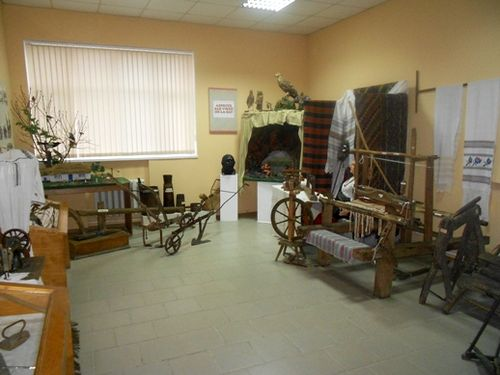
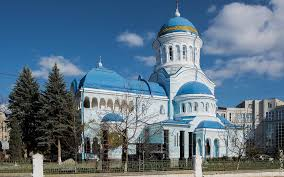
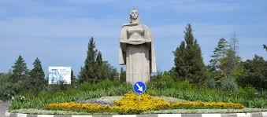

Explorează Bălțiul
Muzeul de Istorie și Etnografie din Bălți

În 1990 Muzeul a fost transferat iarăși într-un alt local provizoriu în clădirea fostului club „Constructorul” care nu corespunde cerințelor unui muzeu. Sala care a fost recomandată cu insistență de către autoritățile orașului pentru expoziție nu poate fi folosite din cauza coloanelor, scenei și înclinării podelei. Lăsa de dorit aspectul estetic al clădirii. Anterior, colectivul muzeului s-a adresat conducerii cu rugăminte de a i se acorda ca local clădirea fostei prefecturi. Atunci autoritățile orășenești au declarat că clădirea va fi de molată, deorece nu sunt destul bani pentru renovare. Totuși în clădirea istorică a fost păstrată și în prezent se află Oficiul Stării Civile.
Catedrala „Sfinții Împărați Constantin și Elena”

În martie 1923 s-a înființat Episcopia Hotinului cu reședința la Bălți. Noul ierarh al Hotinului devine Visarion Puiu. Instalarea noii episcopii cerea construirea unei biserici mari și impunătoare. Prin decretul regal nr. 315 din 31 ianuarie 1924 se aprobă cedarea pe veci către Episcopia Hotinului a terenului cu o suprafață de 7.595 m2 situat la intersecția străzilor Regele Ferdinand și General Berthelot (actualmente străzile Independenței și 31 august 1989). Prin același decret se mai instituia un comitet alcătuit din persoane oficiale din Bălți pentru a ajuta și supraveghea mersul construcției. Comitetul încredințează construcția catedralei arhitectului Adrian Gabrilescu [1]. În septembrie 1924 au fost alocați primii bani pentru începerea lucrărilor. P. S. Visarion invită la solemnitatea punerii pietrei de temelie, la 24 septembrie 1924, pe Alteța Sa Regală, Principele Carol, patriarhul Damianos al Bisericii Ortodoxe a Ierusalimului, membrii Sfântului Sinod și pe alți demnitari.
Aleea Clasicilor Culturii Naționale din Bălți

Aleea Clasicilor Culturii Naționale din Bălți, inaugurată pe data de 17 iulie 2010, se află în centrul orașului, în scuarul „Meșterul Popular”, rebotezat în „Scuarul Clasicilor”. Primele trei busturi instalate pe Alee sunt ale marilor scriitori: Mihai Eminescu, Ion Creangă și Grigore Vieru. Este un loc perfect pentru o plimbare relaxantă în centrul cultural al urbei.